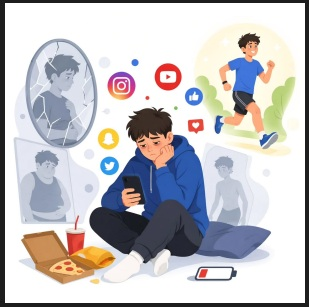
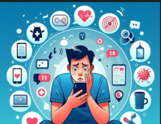

Siglo XXI: soledad silenciosa juvenil
En la era digital, los jóvenes estudiantes viven en una constante conexión tecnológica que puede ocultar una realidad preocupante: el incremento de la soledad y el aislamiento social.

Hoy en día la presencia de la tecnología influye significativamente en la vida de los jóvenes estudiantes del futuro e impacta de forma silenciosa y profunda; en nuestro mundo digital podemos encontrar diversidad de contenidos, todo va a depender del contenido que la sociedad esté buscando y cómo emplee su uso diario. Siempre buscando calidad y sustentabilidad.
Cuando se habla de un algoritmo y a eso le sumamos una juventud llena de curiosidad, las redes sociales se destacan de forma que no siempre generan beneficio para los estudiantes cuando se utilizan de manera excesiva; es aquí cuando se encuentra una observación, un fenómeno muy recurrente. El siglo XXI, conocido como la era digital, enfrenta mecanismos que llevan a la soledad a los jóvenes estudiantes, ya que presentan una destacada atención adyacente a la soledad, la cual se disfraza de compañía momentánea, lo que nos deriva a lo siguiente.
Existe una preocupación creciente sobre el impacto del uso excesivo de los móviles en el bienestar de los estudiantes. Los autores parten de la premisa de que la adicción a los teléfonos inteligentes puede influir en la soledad y, por ende, en el bienestar subjetivo. (INFOCOP, 2024)
Esta información genera una pregunta importante.
¿Puede la soledad afectar la calidad de vida? Al hablar de un exceso de uso tecnológico en un joven estudiante se degrada su estabilidad, ya que si el uso de este recurso está mal administrado es claro el reflejo de una repercusión en su calidad de vida.
Se estima que la soledad percibida es por una falta de conexión personal y un encuentro de bienestar por potenciar habilidades en las que el estudiante puede destacarse sin el uso de tecnología.
¿Cómo podríamos categorizar esta soledad?

Un 44% de los jóvenes dicen que se conectan para no sentirse solos, pero no son conscientes de que precisamente las redes son las que provocan mayor soledad, y una consecuencia aún peor: el aislamiento social. (SJD Sant Joan de Déu, 24)
Como respuesta al interrogante podemos afirmar que se clasifica como una soledad social, en la cual es como si de una burbuja se tratara en la cual se puede encontrar una seguridad y compañía momentánea, pero a la hora de caer en la realidad nuevamente produce un efecto impactante de vacío lo cual puede producir ese impacto de estancamiento.
¿Conexión o aislamiento? ¿Cómo se relaciona con la degradación de los jóvenes estudiantes?
Bajo el análisis crítico realizado por la DR. Daniela Aldas Ávila se confirma que el mundo digital aísla a los jóvenes ya que, “El promedio global para adolescentes ronda las 7 horas diarias” del uso tecnológico siendo TikTok, Instagram, WhatsApp y YouTube las más generales que la juventud utiliza. El vínculo creado en estas áreas digitales afecta grandemente ya que el tiempo empleado en las redes no se proporciona a un aprovechamiento de la brecha digital.
“Para muchos adolescentes, la pantalla se vuelve un refugio ante el malestar o el aburrimiento, pero al mismo tiempo les impide desarrollar recursos propios para manejar sus emociones”. (Ávila, 25)
Esto los lleva a un estado momentáneo de relajación cubriendo un vacío interior y en vez de construir para crecer, simplemente están sacando a flote su diario vivir, un estudiante que es joven y vive su vida esperando a que el mundo y la presión social ceda ante él, es una problemática sin escapatoria, porque es un hecho que el tiempo no se detiene ni le hace espera a nadie, por ende la soledad que se percibe al momento de no encontrarse cómodo consigo mismo se deriva de un pensamiento inestable de autorregulación controlable que conlleva a un refugio digital, pero este no sacará de ser ese sentimiento al joven que no busca ayuda.
Los medios digitales son grandes herramientas con el uso y la persuasión correctos; todo depende que el joven estudiante se dedique a pensar y reconocer su error, no guardarlo esperando que sane y desaparezca con el tiempo, por ello la soledad silenciosa representa un gran peligro.
Para finalizar...
Un ejemplo hipotético.
Un adolescente de 17 años usa constantemente redes sociales, pero a pesar de su actividad en redes, siente esa soledad y vacío incómodo, derivado de un descontrol personal; con el tiempo empezó a interactuar con personas en chats, lo que intercambió su vida social por una digital: lo cual aumentó su sensación de aislamiento.
Como aprendizaje obtenemos...
“Esa soledad, que no figura en el electro ni en el laboratorio, enferma. Callada, insidiosa, aumenta la presión, altera el sistema inmune, deprime, envejece y mata.” (Cornier, 2025)
Es importante que las personas busquen ayuda y recuerden que siempre pueden contar con el apoyo genuino de otros, evitemos el poner en riesgo la salud mental y física. Como estudiantes son capaces de seguir adelante siempre creciendo hacia un futuro lleno de promesas. Utilicemos la tecnología como beneficio.
“Hago constar que no he dado ni recibido ayuda no autorizada en la realización de esta asignación”
Referencias
Ávila, D. D. (11 de Septiembre de 25). Adolescentes hiperconectados: la soledad digital. Obtenido de Academia Nacional de Medicina de Colombia: https://anmdecolombia.org.co/adolescentes-hiperconectados-la-soledad-digital/
Cornier, D. M. (16 de Octubre de 2025). Colegio de médicos. Obtenido de SOLEDAD: LA EPIDEMIA SILENCIOSA DEL SIGLO XXI: Y esa soledad, que no figura en el electro ni en el laboratorio, enferma. Callada, insidiosa,
INFOCOP. (15 de March de 2024). INFOCOP- consejo general de la psicología de España. Obtenido de https://www.infocop.es/la-adiccion-al-movil-se-asocia-a-soledad-y-malestar-en-jovenes/
SJD Sant Joan de Deu. (26 de Julio de 24). SJD Sant Joan de Deu. Obtenido de https://escolasalut.sjdhospitalbarcelona.org/es/consejos-salud/adolescente/adolescentes-pantallas-riesgo-soledad-era-digital